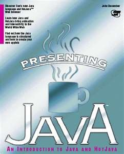

Hobbies
Intro
Although a variety of my hobbies are looked upon by many people as a waste of time, each has a purpose that is tied in with my admiration. I have struggled to get to where I am but have pretty much retained the same hobbies and career goal in mind. My career goal which is to become a programmer of some type and my hobbies reflect just that.
Programming 
My first hobby is in learning about creating program with different programming languages.
I guess this interest began when at 12 years old I tried picking up C++ as a programming language. It has
been a long time since I tried programming in C but it lead to to choose programming as a major and
continue with my studies. Although it is hard, I try and read books on other programming languages and
try to take the time to create small programs. Of course this hobby is also one of the hardest for me to
do because I work full time and go to school full time leaving me with little time.
There are several reasons why I am interested in programming:
- I like understanding how programs interact with each other.
- Game design and how it has evolved has interested me for a long time
- Some special effect and other graphics from movies have some roots in programming.
Movies
Watching movies is also another one of my past times. I am usually watching a
movie at the same time I am studying and doing homework. I guess watching movies keeps me sane with
having almost no time to myself. There are several reasons I like movies such as it provides me
entertainment, it keeps me alert when doing homework, and gives me ideas for some programming
concepts.
Some of the programming concepts that movies show are:
- Creating animations in a computer program that is then tied in with the movie.
- Having to learn about both 2D and 3D animations and environments.
- Shows how the animations are programmed a certain way to interact with the environment they were created for
Playing Online Video Games
I play a variety of different online video games such as World of Warcraft, Starcraft,
and Global Agenda everyonce in a while when time permits.
Of course working full time, school, and being a father takes priority. I guess playing WOW can be fun
and entertaining but there are also reasons I like the game from a programming standpoint.
The reasons I like playing online video games when it comes to programming are:
- These games conbines various elements that keep the players coming back combining functionality, customer feedback, and varius activities in and out of the game
- The games also show a good model between a variety of programming elements:
- They show interaction between a program, server, and client in real time.
- They show how the program can be updated from the server to the client.
- They also shows how many different programmers, with different positions and responsibilities, can put each part of a program together to create a polished fully functional program